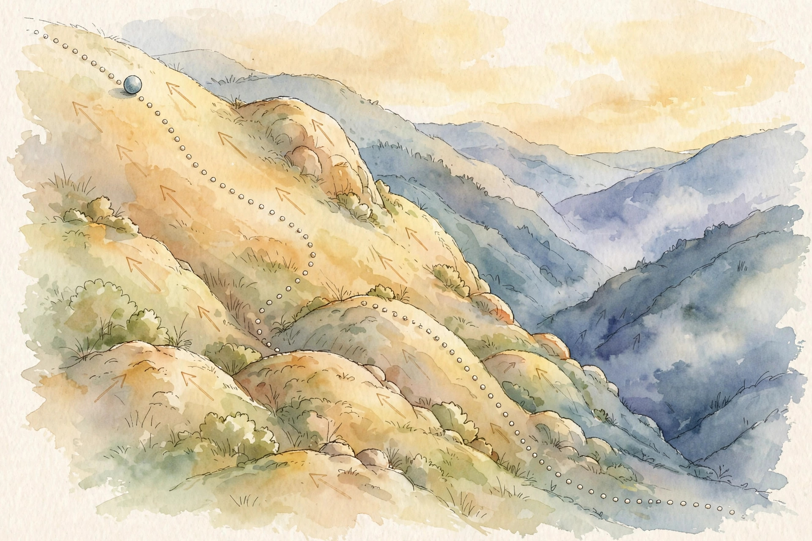

U06 · Scores, diffusion, and stochastic dynamics
The gradient of the log-density points toward cleaner data. The unit learns that direction, schedules its destruction, and walks it back.
Source fact A number, formula, or claim taken directly from the lesson file content/v2/math-genmodels/lessons/u06.md, with its section tag.
Interpretation Companion commentary that connects ideas. It restates, never invents.
Illustration A toy or figure built by this companion for intuition. Numbers here are demonstrative, not lesson numbers.
U06-C06 A pointer to the lesson concept that owns the fact.
No lecture transcript exists for this unit. The lesson is locally authored bridge content, and every leaf carries PLANNED / SOURCE ATTRIBUTION PENDING. This companion narrates the lesson, not a lecture. No source video exists.
Chapter 1 · C01 to C03
Source factU06-C01 The running toy: a one-dimensional chain with betas (0.1, 0.2, 0.3, 0.4), T = 4, x_0 = 2.0, and noise draw eps = 0.5. Key numbers: alpha_bar_4 = 0.3024, x_4 = 1.5174, reverse mean 1.8983 with variance 0.0714, DDPM toy loss 0.005, DDIM step 1.70 to 1.7630, Tweedie 1.2 to 0.0, guided score 1.2 at w = 3.

Illustration The score field as terrain. Follow the arrows uphill. AI-generated watercolor.
Source factU06-C01 p(x) = N(0, 1). The score: d/dx log p(x) = -x. At x = 1 the score is -1: it points left, toward the mode at 0. At x = -2 the score is 2: it points right, again toward the mode. At x = 0 the score is 0: at the mode there is no uphill. At x = 3: -3. Far in the tail, the pull is strong.
Source factU06-C02 Model s_theta(x) = -a x, one parameter. The explicit score-matching objective: E_p[tr(grad s_theta) + 0.5 ||s_theta||^2]. With E[x^2] = 1 under N(0,1): objective = -a + 0.5 a^2. Derivative: -1 + a = 0. Optimum a = 1, value -0.5. The fitted score is exactly the true score -x.
Source factU06-C03 True x_0 = 0 (a point mass). Noise sigma = 0.5. Observe x = 1.2. The noisy law is N(0, 0.25). Its score at x: -x/sigma^2 = -4.8. Tweedie: x0_hat = x + sigma^2 × score(x) = 1.2 + 0.25 × (-4.8) = 0.0. Exact recovery. The noisy score points from the observation back to the clean point that most likely produced it.
Nugget 01 · U06-C01
What happened. The score at 1 was -1, at -2 was 2, at 0 was 0. Every arrow pointed at the mode.
Why it matters. The score needs no normalization constant: the constant vanishes under the gradient. This is why score-based methods sidestep the partition function that haunts energy models.
Principle. The score is the direction a noisy point should move to become cleaner. A score model trained only near the data extrapolates far from data, and following it leads nowhere.
Nugget 02 · U06-C03
What happened. Observation 1.2, noise 0.5: Tweedie returned 0.0, the exact clean point.
Why it matters. One formula links three views: denoise the sample, learn the score, predict the noise. DDPM trains the third and uses the first two.
Principle. Tweedie returns the posterior mean. With a multimodal truth and large noise, the mean sits between modes where no clean point lives: correct as a mean, wrong as a sample.
Chapter 2 · C04 to C06
Source factU06-C04 Betas (0.1, 0.2, 0.3, 0.4). Alphas are 0.9, 0.8, 0.7, 0.6. alpha_bar_4 = 0.3024. The forward law: x_t = sqrt(alpha_bar_t) x_0 + sqrt(1 - alpha_bar_t) eps. With x_0 = 2.0 and eps = 0.5: x_4 = 0.5499 × 2 + 0.8352 × 0.5 = 1.5174. Signal shrinks. Noise fills the rest. At large t the chain forgets x_0 and becomes pure noise.
Illustration Step the lesson chain. Choose t and see x_t for the lesson constants (x_0 = 2.0, eps = 0.5, betas 0.1 to 0.4). The intermediate alpha_bar values are products of the lesson betas, computed here.
t: 4
Source factU06-C06 Batch of three: true noises (0.5, -0.3, 0.1), predicted (0.45, -0.35, 0.2). Squared errors: 0.0025, 0.0025, 0.01. Mean: 0.005. That is the DDPM loss on this batch: E over t, x_0, and eps of ||eps - eps_theta(x_t, t)||^2.
One line, no trace, no partition function.
Nugget 03 · U06-C04
What happened. x_0 = 2.0 became x_4 = 1.5174 through a closed form, with no simulation of the middle steps.
Why it matters. Because each step is Gaussian, x_t given x_0 has a closed form. Training samples t uniformly and asks the model to denoise x_t at every noise level. The schedule is the curriculum: early t teaches fine detail, late t teaches global structure.
Principle. Too few steps with large betas breaks the reverse Gaussian approximation, and the training loss never tests the reverse assumption. Keep betas small or shorten the chain.
Nugget 04 · U06-C06
What happened. Three noise predictions, three squared errors, one mean: 0.005.
Why it matters. The DDPM loss trains the noise predictor, which is equivalent to score matching on noisy data at every noise level. The simple loss weights all t equally, which emphasizes mid noise levels over the true ELBO weighting: it trains better and bounds worse.
Principle. Know which objective you chose. Training without the time embedding teaches the network the average over noise levels: good at none, with a reasonable-looking loss.
Chapter 3 · C05, C07 to C08
Source factU06-C05 Step t = 2 to t = 1, with the true x_0 = 2.0 known for the derivation. The posterior q(x_1 | x_2, x_0) is Gaussian with mean coeff_x0 × x_0 + coeff_x2 × x_2, coeff_x0 = 0.6776 and coeff_x2 = 0.3194. With x_2 = 1.7: mean = 0.6776 × 2 + 0.3194 × 1.7 = 1.8983. Variance 0.0714. The reverse kernel hedges between where the chain is and where it came from, closer to the clean point.
Source factU06-C07 Same step, x_2 = 1.7, predicted noise 0.5. DDIM with eta = 0: first estimate the clean point, x0_hat = (1.7 - sqrt(0.28) × 0.5)/sqrt(0.72) = 1.6917. Then step deterministically: x_1 = sqrt(0.9) × 1.6917 + sqrt(0.1) × 0.5 = 1.7630. No new noise is added. Run the same inputs again and get 1.7630 again.
Source factU06-C08 x = 1, score -1, step size delta = 0.1, noise draw z = 0.3. Update: x <- x + (delta/2) × score + sqrt(delta) × z = 1 - 0.05 + 0.0949 = 1.0449. The drift pulls toward the mode. The noise keeps the chain exploring. Without noise this is gradient ascent to the mode. With noise it samples the whole law.
Nugget 05 · U06-C07
What happened. The same eps network produced a stochastic step landing near 1.8983 and a deterministic step landing at 1.7630.
Why it matters. DDIM generalizes the reverse process to a family with the same marginals but different noise per step. Eta = 0 removes all noise: the chain becomes an ODE discretization, invertible, and skippable. Fifty steps can replace a thousand with small quality loss.
Principle. Use DDIM when speed matters and exact inversion is wanted. Stride too aggressively and the marginal approximation breaks: colors shift, details wash out.
Nugget 06 · U06-C08
What happened. One step: 1 to 1.0449. Drift -0.05, diffusion +0.0949.
Why it matters. In the limit of small steps and long runs, the chain stationary law is exactly p. The noise scale sqrt(delta) is not a tuning choice: it is what makes the stationary law right.
Principle. Multimodal p with small delta traps the chain in one mode for the whole run. The samples look converged and are wrong. Diagnose with multiple chains from spread starts.
Chapter 4 · C09 to C12
Source factU06-C10 Unconditional score -1.2, conditional score -0.4, guidance weight w = 3. Classifier-free guidance: s_guided = s_uncond + w × (s_cond - s_uncond) = -1.2 + 3 × 0.8 = 1.2. At w = 1: s = -0.4, pure conditional. At w = 0: s = -1.2, pure unconditional. Larger w means stronger adherence to the condition and less diversity.
Source factU06-C11 dx/dt = -x from x = 1 to t = 1. Exact: e^-1 = 0.3679. Euler with 10 steps of 0.1: 0.9^10 = 0.3487. Error 0.0192. Halve the step: error quarters. Heun on the same problem: error about 0.0006. Same 10 steps, 30x smaller error, at 2x the cost per step.
Source factU06-C12 Uniform(0, 1) smoothed with Gaussian sigma = 0.05. At x = 0.5 the score is 0.0: flat interior, no pull. At x = 0.01 the score is 13.5: a strong push inward. As sigma shrinks toward 0 the score at the boundary blows up: the true uniform has no score there at all.
Nugget 07 · U06-C10
What happened. The knob moved the score from -1.2 to -0.4 to 1.2. It interpolated, then extrapolated.
Why it matters. Classifier-free guidance trains one network with and without the condition and extrapolates between the two scores. The overshoot trades likelihood for condition fidelity.
Principle. w too large overshoots into low-density regions: saturated colors, distorted shapes. Tune w on samples, not on theory.
Nugget 08 · U06-C12
What happened. Score 0.0 inside, 13.5 at the edge. The boundary pull is real and large.
Why it matters. Diffusion handles boundaries by noise: at high noise the smoothed law is well behaved, and the model learns the smoothed scores. Near t = 0 the truth is singular and the model extrapolates. Likelihoods from the ODE on discrete or bounded data measure the smoothed fiction, not the raw truth.
Principle. Report ODE likelihoods on image data without dequantization and the ranking can flip with the noise floor. Dequantize as the cheap default.
Practice
Source fact The lesson ships a unit assessment: 6 breadth-recall questions, 2 deep ladders of 5 follow-ups, 2 analytical exercises, 1 implementation debug (a DDPM at loss 0.005 with gray-mush samples), and 2 changed-constraint scenarios. Keys live in lessons/keys/keys-u06.md. The lab pointer lists 6 hands-on exercises in labs/lab-u06.md.
Source fact Lesson figures referenced: u06_f01_score_field.png (s(1) = -1, arrows point uphill), u06_f02_noising_chain.png (x_0 = 2.0 to x_4 = 1.5174), u06_f03_tweedie.png (1.2 denoised to 0.0), u06_f04_ddim_vs_ddpm.png (DDIM 1.7630, DDPM mean 1.8983), u06_f05_chapter.png (noise to data in five numbers). The charts on this page re-plot the lesson numbers above.
Wisdom index